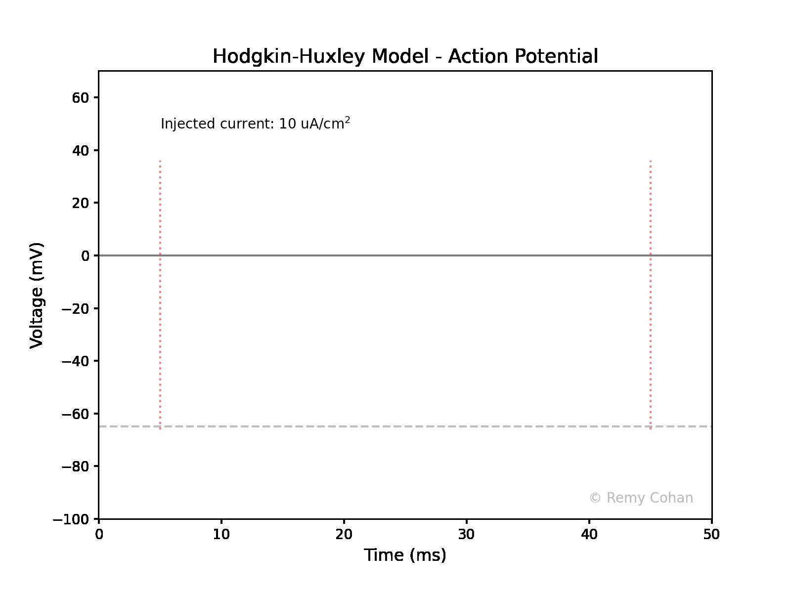
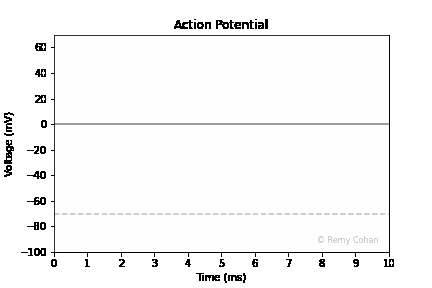
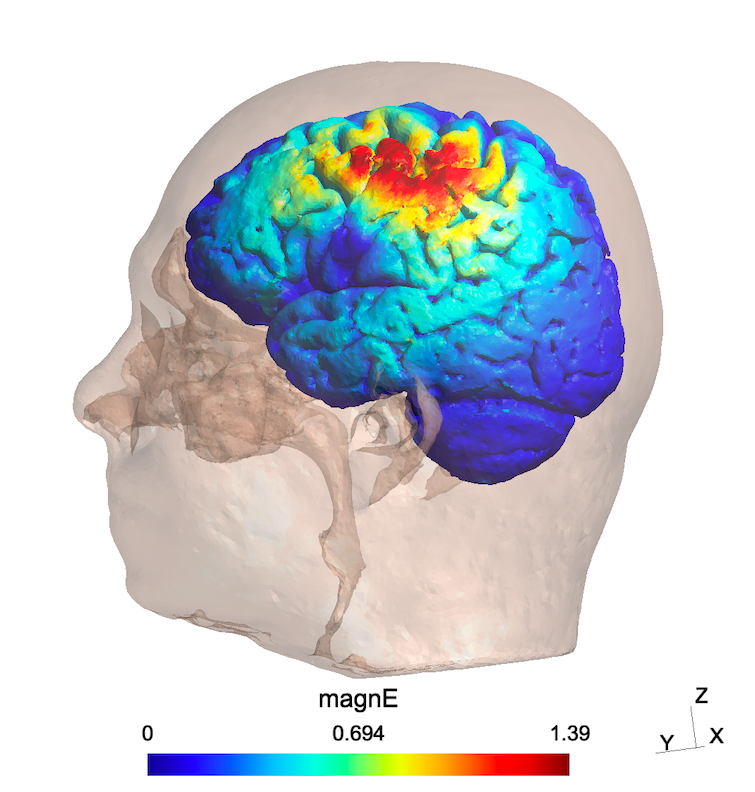
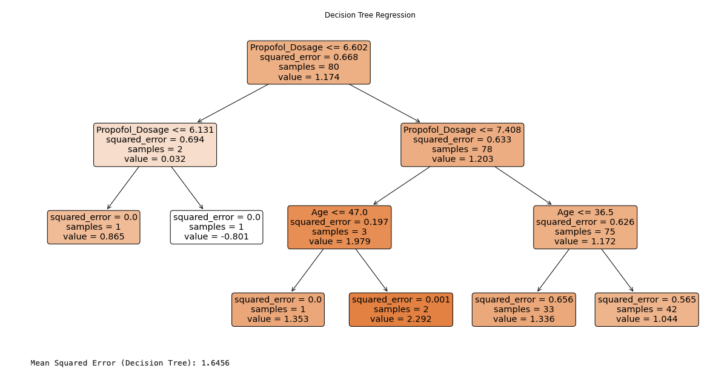

Simulation & ML
Below are some of my simulation and ML scripts:
Hodgkin Huxley Simulation
Checkout the Hodgkin Huxley Simulation on GitHub:
View Hodgkin Huxley Simulation Code on GitHubAction Potentials Simulation
Checkout the Action Potentials Simulation on GitHub:
View Action Potentials Simulation Code on GitHubE-Field Simulation
Explore the Electric Field Simulation on GitHub:
View E-Field Simulation Code on GitHubPropofol and MEPs ML Model
Explore the Machine Learning Algorithm to Predict Whether Handedness and Propofol Dosage have any effects on MEP amplitudes on GitHub:
View Propofol_MEP_ML Code on GitHubSample Code: Basic Neural Network in Python
import numpy as np
import tensorflow as tf
# Define a simple feed-forward neural network
model = tf.keras.models.Sequential([
tf.keras.layers.Dense(128, activation='relu'),
tf.keras.layers.Dropout(0.2),
tf.keras.layers.Dense(10)
])